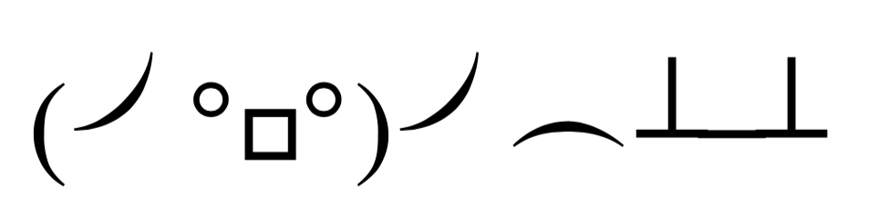
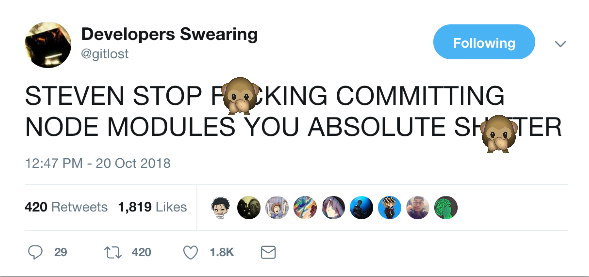

Welcome! 👋
Before we get started:
- Make sure you have a local Git installation (https://git-scm.com/)
- Pull up your command line tool of choice
- Log into GitHub - or make an account if you don't have one yet
- Join us on Slack - ask a volunteer how
About Me - The Past 👶
- Began coding when I was 11
- Dropped out of college, (re)taught myself how to code, and began freelancing
- Moved to Dallas in 2015 and began to work full time in software dev, primarily frontend.
About Me - The Present 🎁
- Engineering Manager at Creative Market
- Director of Women Who Code DFW
- Full-time student
- During the day, I spend most of my time doing Manager Stuff™
- Several side projects and some freelance work that keeps my hand in code.
About Me - The Future 🚀
- UI/UX Engineering Manager of Creative Market
- Design Systems and User Testing
- Mentor others, speak at more events, and write more
- FINALLY FINISH MY PORTFOLIO??
What I'm Passionate About
- Creating great User Experiences and bringing beautiful design to life using code
- Creating opportunity for others, and helping people reach their potential
- Building teams and environments that make people excited to go to work everyday
- Learning and growing every damn day
Connect with Me
- @CareeCodes on Twitter, Instagram, and almost everywhere else.
- http://caree.codes
- blog.caree.codes
- Reach out to me on the WWCodeDFW Slack.
Intro to Git and Github
Git it, gURL
I Hate Git



General Advice
- Save and push to your remote branch often
- K.I.S.S. (And consult your rubber duck often4)
- Google stuff if you need to, and ask for help
My goal for this workshop...
What's the difference between Git and GitHub?
Version Control is helpful for...
- Collaboration
- Source of truth and record
- Maintaining multiple versions of the same software
Vocab Time! 🤓
- A branch is essentially an independent line of development.
- You can take advantage of branching when working on new features or bug fixes because it isolates your work from that of other team members.5
Let's learn some commands!
git add .
- Creates a commit and saves it to your repository
- You have to add your changes to staging before you can commit
- You must include a commit message when commiting changes.
To ask questions

To celebrate project milestones

To give a colleague constructive feedback
- Creates a new branch
git checkout -b new-branch-name
- GitHub for Noobs (Youtube Course)
- Getting Git Right (Atlassian)
- Git documentation